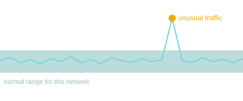

Device visibility
Observe device activity and MAC/IP information to help identify devices that are not recognized on the LAN.
A proposed lightweight Network Intrusion Detection System that studies normal traffic behavior in a Wi-Fi Local Area Network and flags unusual activity and potentially unauthorized devices for administrator review.

The study addresses a practical problem: small and medium-sized LANs may not have dedicated security personnel or affordable tools that continuously compare network activity with expected behavior.
Wi-Fi passwords, firewalls, and MAC address filtering mainly focus on prevention or predefined rules. They do not always analyze changing network behavior to identify unusual activity.
Use traffic anomaly analysis to detect unauthorized devices and abnormal network activity.
Read the study backgroundExtract packet rates, packet sizes, protocol mix, and MAC/IP activity from normal and simulated attack traffic.
Build a baseline profile of normal traffic and known device behavior, then flag deviations for review.
Evaluate using simulated attacks and public datasets with accuracy, precision, recall, F1-score, false-positive rate, and processing overhead.
The proposed system combines device visibility, traffic feature extraction, anomaly analysis, and an administrator-facing dashboard.
Observe device activity and MAC/IP information to help identify devices that are not recognized on the LAN.
Prepare flow-level features such as packet rates, packet sizes, and protocol mix for behavior analysis.
Build a profile of normal traffic and known device behavior for the specific network being studied.
Present anomalies, potentially unauthorized devices, logs, and basic reports to the network administrator.
LAN Sentinel is designed to passively observe one local network, prepare traffic and device features, learn expected behavior, and alert an administrator to deviations.
Passively capture LAN traffic through a supported monitoring host or mirrored port.
Prepare packet rates, packet sizes, protocol mix, and MAC/IP activity.
Compare current activity with a learned baseline of normal network behavior.
Show anomalies and potentially unauthorized devices for administrator review.
These are the simulated attack scenarios identified in the concept paper. They are test cases, not claims of completed detection results.
A host probes devices for open ports.
SIMULATED TEST CASEForged ARP information may mislead devices about IP-to-MAC mappings.
SIMULATED TEST CASEAbnormally high traffic may disrupt network availability.
SIMULATED TEST CASEAn unrecognized device appears in the monitored LAN.
SIMULATED TEST CASESystem testing will examine detection quality and processing cost.
LAN Sentinel is developed as an academic research project.
Open the dashboard to explore the analysis workspace. Sign in is required before viewing dashboard pages.